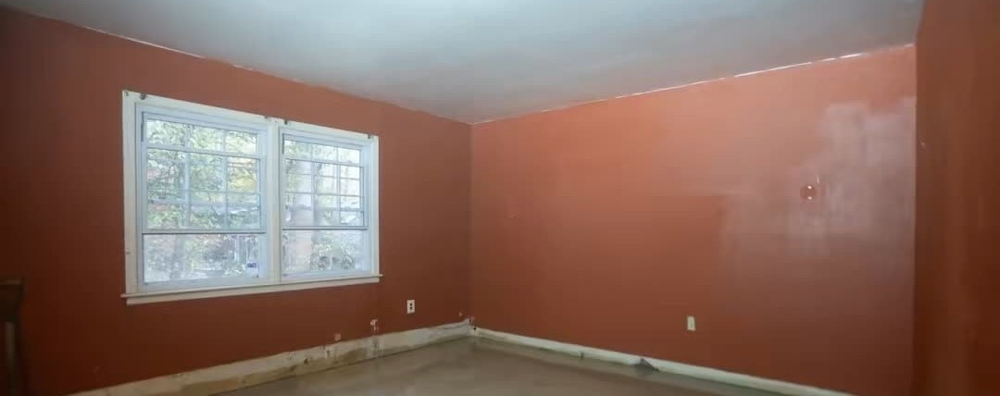
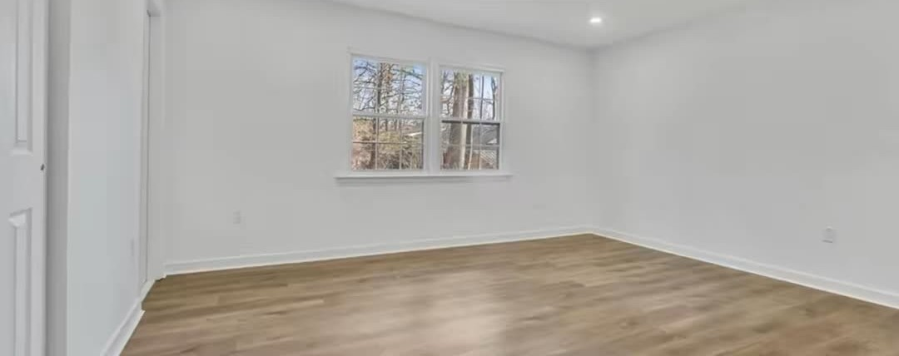

Cash home buyer · North Jersey
I buy the houses most people walk away from.
Hoarder houses. Inherited homes. Fire, water, mold, termites. Sell your house exactly as it is, for cash, on your timeline.
or call (862) 328-5179
- No repairs
- No clean-out
- No fees
Don't fix it.
Roof, siding, foundation, mold, termites, fire or water damage. You don't spend a dollar on repairs. I buy the house the way it stands today.
On my dime.
All of this happens after I buy the house, on my dime, not yours.
Don't clean it out.
Leave the furniture, the boxes, the bags, whatever is in the attic and the basement. Take what matters to you and close the door. The rest is my job.
No agents. No showings.
No realtor commission, no strangers walking through your house, no home inspection to pass. Just a cash offer, straight from the person buying the house.
How it works
Three steps. That's it.
Tell me about the house
Text or call me with the town and what's going on with it.
Get a cash offer
Free, with no obligation. If the number works for you, we move forward.
Close when you're ready
Fast if you need it, later if you need time. We set the date around you.
You walk away with cash.
I take it from here. What I charge you: $0.
Get your cash offerAnything already owed on the house and New Jersey's transfer fee still get settled at closing, as in any sale.
Any condition
Does your house look like this?
Then let's talk. That's exactly the kind of house I buy.


AI-generated images of the kind of house I buy, not photos of real houses. Most buyers see a problem. I see a house I can work with.
- Hoarder houses
- Inherited homes
- Houses in probate
- Vacant houses
- Fire damage
- Water damage
- Mold
- Termites
- Foundation issues
- Years of wear and tear
Before & after
Then I bring them back.
The house above is an AI animation. These are real houses from my own projects, photographed before and after. Keep scrolling or drag the line.

 BeforeAfter
BeforeAfter


BeforeAfter
 BeforeAfter
BeforeAfter

 BeforeAfter
BeforeAfter

 BeforeAfter
BeforeAfter
Straight from me
Here's the deal, in 23 seconds.
In my own words. Watch it or read it below.
Read the transcript
“Are you on the market to sell your home, but you're worried about repairs, cleaning out, showings, realtors, paying commission and all that? No, no, no. Let's not do that. Let's connect with each other. I can pay you cash, worry free. You don't have to go through inspections, and then we can make it happen fast. Cash, as-is offers. Shoot me a text or DM me.”
“Cash, as-is offers. Shoot me a text or DM me.”
Text me about your house


Who's buying
I'm Luca.
I buy houses across North Jersey. If you're stuck with a house that's more work than you want to deal with, or an inherited home still full of a lifetime of belongings, that's where I come in.
You talk to me directly. Not a call center, not a middleman.
I renovate with my team: demolition, electrical, plumbing, HVAC, windows, floors, kitchens, bathrooms. That's why the condition of your house doesn't scare me.
Questions
Straight answers.
Do I have to clean out the house first?
No. Leave anything you don't want to keep: furniture, boxes, trash, the stuff in the attic. Take what matters to you and I'll take care of the rest.
Do I need to make any repairs?
No. I buy the house as-is. Mold, termites, fire or water damage, foundation issues, a roof that leaks: you don't fix anything.
Are there fees or commissions?
No commission, and I don't charge any fees. What you do still pay, as in any sale: New Jersey's transfer fee, plus anything already owed on the house, like a mortgage or back taxes. It all comes out of the sale price at closing.
Will there be showings or inspections?
No showings, and no home inspection to pass. If I need to see the house, it's just me. New Jersey requires a smoke and carbon monoxide alarm check before a house is sold, and your town handles it. I'll tell you up front what yours needs and how we'll handle it.
How fast can we close?
On your timeline. We can make it happen fast if you're in a hurry, or take our time if you need to sort things out first. The one thing that can slow us down is legal paperwork, like a lien or estate papers on an inherited house.
Is the offer free?
Yes. The cash offer is free and you're under no obligation to accept it.
How do you come up with your offer?
I look at what the house needs and what it could sell for once it's fixed up, then give you one straight number. It'll be less than a finished house sells for, because I take on the repairs, the clean-out and the risk. If it doesn't work for you, no hard feelings.
How do I get paid?
At closing, through a title company or attorney, by wire or certified check.
The estate paperwork isn't finished. Can I still reach out?
Yes. Reach out first and we'll work out the timing.
Where do you buy?
New Jersey, mostly North Jersey. Send me the town and a few details, and I'll let you know.